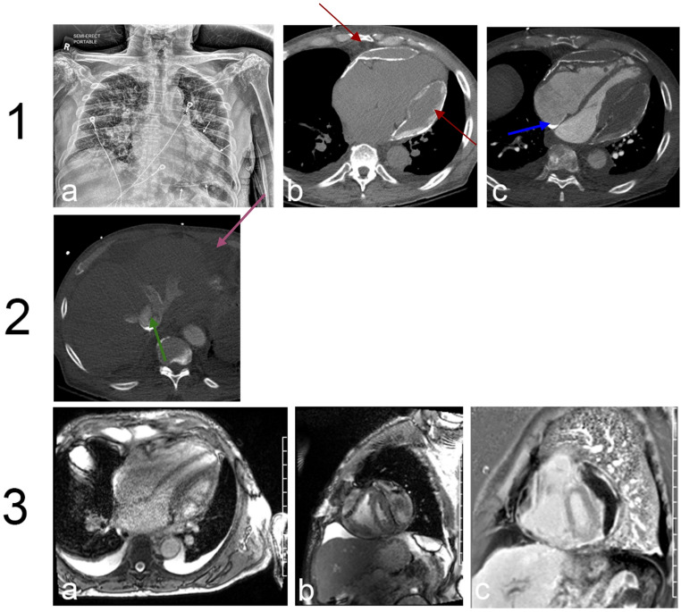

Ficha del catálogo
Pericarditis constrictiva
- Sistema
- Cardiovascular
- Modalidad
- TC
- Región
- Tórax
- Dificultad
- Avanzado
Se produce cuando un pericardio engrosado, fibrótico o calcificado impide el llenado diastólico normal de los ventrículos y provoca una elevación e igualación de las presiones de llenado. Sus causas incluyen tuberculosis, cirugía cardiaca previa, radioterapia torácica y pericarditis de repetición. Clínicamente domina la congestión sistémica con ingurgitación yugular, hepatomegalia, ascitis y edema, con pulmones relativamente limpios.
Técnica
La tomografía es la mejor técnica para demostrar la calcificación y medir el grosor pericárdico. La resonancia cardiaca añade información funcional mediante secuencias en tiempo real durante la respiración, que muestran la interdependencia ventricular. El ecocardiograma aporta los datos hemodinámicos que confirman el patrón restrictivo del llenado.
Qué observar
- Grosor del pericardio y su distribución focal o difusa
- Calcificación pericárdica en placas o en banda continua
- Morfología tubular de los ventrículos y deformidad del septo interventricular
- Dilatación de la vena cava inferior, de las venas suprahepáticas y de las aurículas
- Movimiento anómalo del septo con la respiración en secuencias en tiempo real
- Ascitis, derrame pleural y congestión hepática
Hallazgos
Se aprecia un pericardio engrosado, a menudo con calcificación que dibuja el contorno cardiaco, junto a ventrículos de forma tubular y aurículas dilatadas. La vena cava inferior y las venas suprahepáticas aparecen ingurgitadas y suele haber ascitis. En las secuencias funcionales el septo interventricular se desplaza bruscamente hacia la izquierda durante la inspiración, expresión de la interdependencia ventricular exagerada.
Perlas
Un pericardio de grosor normal no descarta constricción, porque una minoría significativa de casos ocurre sin engrosamiento apreciable, de modo que ante una congestión sistémica sin causa clara el peso del diagnóstico recae en los signos funcionales de interdependencia ventricular y no en la medición del grosor.
Diagnóstico diferencial
- Miocardiopatía restrictiva
- El pericardio es normal, el miocardio suele estar engrosado o infiltrado y no hay interdependencia ventricular exagerada.
- Taponamiento cardiaco
- Existe un derrame a tensión con colapso de cavidades derechas y evolución aguda.
- Insuficiencia cardiaca derecha por hipertensión pulmonar
- Hay dilatación e hipertrofia del ventrículo derecho con arteria pulmonar dilatada y pericardio normal.
- Cirrosis hepática con ascitis
- La vena cava inferior no está distendida y no se identifican alteraciones pericárdicas ni congestión de suprahepáticas.
Simuladores
- Grasa epicárdica abundante que aparenta engrosamiento pericárdico
- Derrame pericárdico organizado confundido con pericardio grueso
- Calcificación de la pared de un aneurisma ventricular vecino
Por modalidad
- TC
- Es la mejor técnica para calcificación y medición del grosor pericárdico y para planificar la cirugía.
- RM
- Aporta la valoración funcional con secuencias en tiempo real que demuestran la interdependencia ventricular.
Protocolo
Tomografía torácica con sincronización cardiaca y cortes finos, con y sin contraste según la indicación, midiendo el grosor pericárdico en varios puntos. En resonancia se emplean cine estándar, secuencias en tiempo real durante respiración libre y realce tardío para valorar inflamación pericárdica activa. Se documenta el calibre de la vena cava inferior.
Clasificación
Errores frecuentes
- Descartar constricción por encontrar un pericardio de grosor normal
- Confundir grasa epicárdica con engrosamiento del pericardio
- Omitir las secuencias funcionales que demuestran la interdependencia ventricular

pericarditis constrictiva pericardio calcificación interdependencia ventricular congestión sistémica tomografía resonancia cardiaca